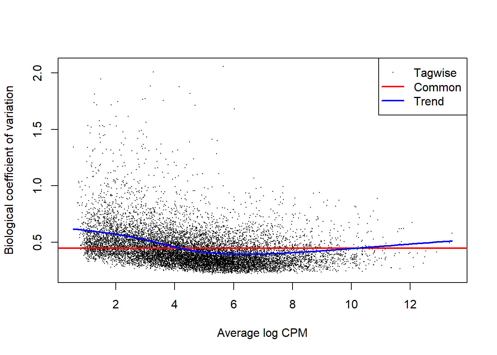
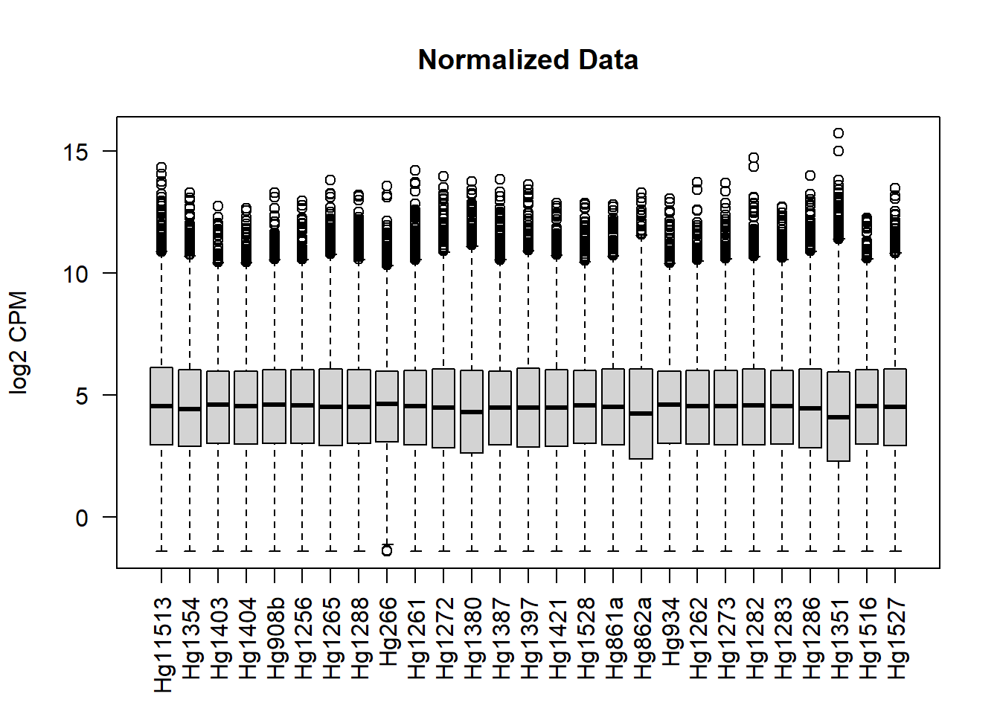

4 Virus+ vs Virus- DGE
4.1 Transcriptome - edgeR - Females
4.1.2 Data
SampleInfo <- read.csv("Input Files/metadata.csv",
stringsAsFactors = FALSE) %>%
mutate(RNA=ifelse(disease_stage=="acute" | disease_stage=="peak", "virus+", "virus-")) %>%
filter(!sex=="male")
#Raw RSEM Gene Counts
Raw <- read.csv(file = "Output Files/txome_genecounts_locid_nohemo.csv",
stringsAsFactors = FALSE,
header = TRUE,
row.names = 1) %>%
select(SampleInfo$sample)4.1.3 Differential Gene Expression Analysis
4.1.3.1 DGElist
#Create DGE Object with counts & sample groups
DGE <- DGEList(counts = Raw, group = SampleInfo$RNA)
#Check DGE Object Samples, Groups, Lib Size, and Norm Factor
DGE$samples ## group lib.size norm.factors
## Hg11513 virus+ 2842670 1
## Hg1354 virus+ 3618804 1
## Hg1403 virus+ 6100522 1
## Hg1404 virus+ 3533565 1
## Hg908b virus+ 5871501 1
## Hg1256 virus+ 4573826 1
## Hg1265 virus+ 2979315 1
## Hg1288 virus+ 2823770 1
## Hg266 virus+ 3543715 1
## Hg1261 virus- 1943267 1
## Hg1272 virus- 4708624 1
## Hg1380 virus- 3204059 1
## Hg1387 virus- 4158987 1
## Hg1397 virus- 4343361 1
## Hg1421 virus- 4508013 1
## Hg1528 virus- 2894695 1
## Hg861a virus- 5407908 1
## Hg862a virus- 4075756 1
## Hg934 virus- 3956989 1
## Hg1262 virus- 4653972 1
## Hg1273 virus- 5011031 1
## Hg1282 virus- 2951861 1
## Hg1283 virus- 4658064 1
## Hg1286 virus- 4284639 1
## Hg1351 virus- 1430600 1
## Hg1516 virus- 4688415 1
## Hg1527 virus- 3763080 14.1.3.4 Estimate Dispersion
On average, the true abundance for each gene can vary up or down by xx% (BCV) between replicates Differentially expressed = needs to vary by more than xx%
## Disp = 0.16755 , BCV = 0.4093# Dispersion trend based on gene abundance
DGE <- estimateTrendedDisp(DGE)
# Tagwise dispersion - allows different dispersion for each gene
DGE <- estimateTagwiseDisp(DGE, verbose = TRUE)## Using interpolation to estimate tagwise dispersion.
4.1.4 Exploratory Plots
4.1.4.1 Normalized counts
4.1.5 Test for DEGs
et <- exactTest(DGE, pair=c("virus-", "virus+"))
write.csv(et, "Output Files/txome_female_edgeR_viralRNA_DGE_results.csv")4.1.5.1 Select DEGs by fold change & pvalue
Uncorrected p < 0.05 log2FC > 1 (2-fold change)
results <-
topTags(et, n = dim(DGE)[1]) %>%
data.frame() %>%
filter(abs(logFC) > 1 & PValue < 0.05) %>%
rownames_to_column(var="gene")
nrow(results)## [1] 1364.1.5.2 Make sure genes are up/down regulated in Virus+ vs Virus-
Visually compare gene expression across viral RNA status to ensure directional change is correct.
CPM %>%
rownames_to_column(var="gene") %>%
filter(gene %in% results$gene) %>%
pivot_longer(cols=!gene, names_to="sample", values_to="expression") %>%
mutate(RNA=ifelse(sample %in% SampleInfo$sample,
SampleInfo[match(sample, SampleInfo$sample), 8],
NA)) %>%
filter(gene %in% results$gene[1:10]) %>%
mutate(RNA=factor(RNA, levels=c("virus-", "virus+"))) %>%
ggplot(., aes(x=RNA, y=expression)) +
geom_boxplot() +
facet_wrap(~gene)4.1.6 GO Enrichment Analysis
4.1.6.2 Up-regulated genes
4.1.6.2.1 Biological Process
go_bp_up <-
WebGestaltR(enrichMethod="ORA", organism="hsapiens",
enrichDatabase="geneontology_Biological_Process",
interestGene = up$gene, interestGeneType = "genesymbol",
referenceGene = background, referenceGeneType = "genesymbol",
sigMethod = "fdr", fdrThr = 0.05,
isOutput = FALSE) %>%
mutate(direction="up",
go="bp")## Loading the functional categories...
## Loading the ID list...
## Loading the reference list...
## Performing the enrichment analysis...4.1.6.2.2 Molecular Function
go_mf_up <-
WebGestaltR(enrichMethod="ORA", organism="hsapiens",
enrichDatabase="geneontology_Molecular_Function",
interestGene = up$gene, interestGeneType = "genesymbol",
referenceGene = background, referenceGeneType = "genesymbol",
sigMethod = "fdr", fdrThr = 0.05,
isOutput = FALSE) ## Loading the functional categories...
## Loading the ID list...
## Loading the reference list...
## Performing the enrichment analysis...## Warning in oraEnrichment(interestGeneList, referenceGeneList, geneSet, minNum =
## minNum, : No significant gene set is identified based on FDR 0.05!4.1.6.2.3 Cellular Component
go_cc_up <-
WebGestaltR(enrichMethod="ORA", organism="hsapiens",
enrichDatabase="geneontology_Cellular_Component",
interestGene = up$gene, interestGeneType = "genesymbol",
referenceGene = background, referenceGeneType = "genesymbol",
sigMethod = "fdr", fdrThr = 0.05,
isOutput = FALSE) ## Loading the functional categories...
## Loading the ID list...
## Loading the reference list...
## Performing the enrichment analysis...## Warning in oraEnrichment(interestGeneList, referenceGeneList, geneSet, minNum =
## minNum, : No significant gene set is identified based on FDR 0.05!4.1.6.3 Down-regulated Genes
4.1.6.3.1 Biological Process
go_bp_down <-
WebGestaltR(enrichMethod="ORA", organism="hsapiens",
enrichDatabase="geneontology_Biological_Process",
interestGene = down$gene, interestGeneType = "genesymbol",
referenceGene = background, referenceGeneType = "genesymbol",
sigMethod = "fdr", fdrThr = 0.05,
isOutput = FALSE) %>%
mutate(direction="down",
go="bp")## Loading the functional categories...
## Loading the ID list...
## Loading the reference list...
## Performing the enrichment analysis...4.1.6.3.2 Molecular Function
go_mf_down <-
WebGestaltR(enrichMethod="ORA", organism="hsapiens",
enrichDatabase="geneontology_Molecular_Function",
interestGene = down$gene, interestGeneType = "genesymbol",
referenceGene = background, referenceGeneType = "genesymbol",
sigMethod = "fdr", fdrThr = 0.05,
isOutput = FALSE) %>%
mutate(direction="down",
go="mf")## Loading the functional categories...
## Loading the ID list...
## Loading the reference list...
## Performing the enrichment analysis...4.1.6.3.3 Cellular Component
go_cc_down <-
WebGestaltR(enrichMethod="ORA", organism="hsapiens",
enrichDatabase="geneontology_Cellular_Component",
interestGene = down$gene, interestGeneType = "genesymbol",
referenceGene = background, referenceGeneType = "genesymbol",
sigMethod = "fdr", fdrThr = 0.05,
isOutput = FALSE) %>%
mutate(direction="down",
go="cc")## Loading the functional categories...
## Loading the ID list...
## Loading the reference list...
## Performing the enrichment analysis...4.1.6.4 Save Results
go <-
bind_rows(go_bp_down, go_bp_up,
go_cc_down,
go_mf_down)
go <-
go %>%
select(!link & !overlapId)
go %>%
mutate(across(where(is.numeric), \(x) round(x, digits=5))) %>%
kable() %>%
kable_styling("basic", font_size=9)| geneSet | description | size | overlap | expect | enrichmentRatio | pValue | FDR | userId | direction | go |
|---|---|---|---|---|---|---|---|---|---|---|
| GO:0045087 | innate immune response | 491 | 26 | 5.07520 | 5.12295 | 0.00000 | 0.00000 | IFI6;C1QB;NR1H3;ACTG1;C1QC;C2;C1QA;NECTIN2;CFB;CFD;HLA-DQA1;MNDA;UBC;APOBEC3G;DHX58;RPL13A;APOE;MX2;AXL;SOCS1;UBA52;ISG15;IFIT3;AIF1;MX1;RSAD2 | down | bp |
| GO:0002253 | activation of immune response | 370 | 18 | 3.82449 | 4.70651 | 0.00000 | 0.00009 | C1QB;NR1H3;ACTG1;C1QC;C2;C1QA;RPS3;NECTIN2;CD79A;CFB;ACTB;CFD;HLA-DQA1;MNDA;UBC;DHX58;UBA52;RSAD2 | down | bp |
| GO:0050778 | positive regulation of immune response | 476 | 20 | 4.92016 | 4.06491 | 0.00000 | 0.00010 | C1QB;NR1H3;ACTG1;C1QC;C2;C1QA;RPS3;NECTIN2;HLX;CD79A;CFB;IDO1;ACTB;CFD;HLA-DQA1;MNDA;UBC;DHX58;UBA52;RSAD2 | down | bp |
| GO:0072376 | protein activation cascade | 38 | 7 | 0.39279 | 17.82143 | 0.00000 | 0.00012 | C1QB;C1QC;C2;GP1BB;C1QA;CFB;CFD | down | bp |
| GO:0006956 | complement activation | 27 | 6 | 0.27908 | 21.49887 | 0.00000 | 0.00026 | C1QB;C1QC;C2;C1QA;CFB;CFD | down | bp |
| GO:0019221 | cytokine-mediated signaling pathway | 458 | 18 | 4.73410 | 3.80220 | 0.00000 | 0.00070 | IL32;IFI6;NR1H3;RACK1;HLA-DQA1;UBC;MPL;HSPA8;CARD14;MX2;AXL;SOCS1;UBA52;ISG15;COL1A2;IFIT3;MX1;RSAD2 | down | bp |
| GO:0019058 | viral life cycle | 208 | 12 | 2.14998 | 5.58144 | 0.00000 | 0.00101 | ITGB5;NECTIN2;UBC;HSPA8;APOBEC3G;APOE;AXL;UBA52;ISG15;DDX5;MX1;RSAD2 | down | bp |
| GO:0006614 | SRP-dependent cotranslational protein targeting to membrane | 83 | 8 | 0.85793 | 9.32481 | 0.00000 | 0.00117 | RPS26;RPL36;RPS3;RPS14;RPL13A;RPL14;UBA52;RPS12 | down | bp |
| GO:0031347 | regulation of defense response | 438 | 17 | 4.52737 | 3.75494 | 0.00000 | 0.00117 | C1QB;NR1H3;C1QC;C2;C1QA;NECTIN2;GPSM3;CFB;IDO1;MNDA;UBC;APOBEC3G;DHX58;APOE;SOCS1;UBA52;RSAD2 | down | bp |
| GO:0030449 | regulation of complement activation | 22 | 5 | 0.22740 | 21.98748 | 0.00000 | 0.00123 | C1QB;C1QC;C2;C1QA;CFB | down | bp |
| GO:0006613 | cotranslational protein targeting to membrane | 87 | 8 | 0.89927 | 8.89608 | 0.00000 | 0.00129 | RPS26;RPL36;RPS3;RPS14;RPL13A;RPL14;UBA52;RPS12 | down | bp |
| GO:2000257 | regulation of protein activation cascade | 23 | 5 | 0.23774 | 21.03150 | 0.00000 | 0.00129 | C1QB;C1QC;C2;C1QA;CFB | down | bp |
| GO:0045047 | protein targeting to ER | 93 | 8 | 0.96129 | 8.32214 | 0.00000 | 0.00187 | RPS26;RPL36;RPS3;RPS14;RPL13A;RPL14;UBA52;RPS12 | down | bp |
| GO:0072599 | establishment of protein localization to endoplasmic reticulum | 96 | 8 | 0.99230 | 8.06207 | 0.00001 | 0.00220 | RPS26;RPL36;RPS3;RPS14;RPL13A;RPL14;UBA52;RPS12 | down | bp |
| GO:0006958 | complement activation, classical pathway | 13 | 4 | 0.13437 | 29.76766 | 0.00001 | 0.00239 | C1QB;C1QC;C2;C1QA | down | bp |
| GO:0006413 | translational initiation | 167 | 10 | 1.72619 | 5.79311 | 0.00001 | 0.00254 | RPS26;RPL36;RPS3;RPS14;ATF4;RPL13A;EIF4G2;RPL14;UBA52;RPS12 | down | bp |
| GO:0002920 | regulation of humoral immune response | 31 | 5 | 0.32043 | 15.60402 | 0.00001 | 0.00407 | C1QB;C1QC;C2;C1QA;CFB | down | bp |
| GO:0000184 | nuclear-transcribed mRNA catabolic process, nonsense-mediated decay | 108 | 8 | 1.11634 | 7.16629 | 0.00001 | 0.00407 | RPS26;RPL36;RPS3;RPS14;RPL13A;RPL14;UBA52;RPS12 | down | bp |
| GO:0060337 | type I interferon signaling pathway | 53 | 6 | 0.54783 | 10.95225 | 0.00002 | 0.00407 | IFI6;MX2;ISG15;IFIT3;MX1;RSAD2 | down | bp |
| GO:0071357 | cellular response to type I interferon | 53 | 6 | 0.54783 | 10.95225 | 0.00002 | 0.00407 | IFI6;MX2;ISG15;IFIT3;MX1;RSAD2 | down | bp |
| GO:0006612 | protein targeting to membrane | 147 | 9 | 1.51946 | 5.92316 | 0.00002 | 0.00472 | RPS26;RPL36;RPS3;RPS14;RPL13A;RPL14;UBA52;RPS12;RTP5 | down | bp |
| GO:0034340 | response to type I interferon | 57 | 6 | 0.58918 | 10.18367 | 0.00002 | 0.00566 | IFI6;MX2;ISG15;IFIT3;MX1;RSAD2 | down | bp |
| GO:0050866 | negative regulation of cell activation | 118 | 8 | 1.21970 | 6.55898 | 0.00003 | 0.00613 | BPI;NR1H3;HLX;IDO1;MNDA;APOE;AXL;SOCS1 | down | bp |
| GO:0070972 | protein localization to endoplasmic reticulum | 119 | 8 | 1.23004 | 6.50386 | 0.00003 | 0.00625 | RPS26;RPL36;RPS3;RPS14;RPL13A;RPL14;UBA52;RPS12 | down | bp |
| GO:0006959 | humoral immune response | 93 | 7 | 0.96129 | 7.28187 | 0.00005 | 0.00936 | BPI;C1QB;C1QC;C2;C1QA;CFB;CFD | down | bp |
| GO:0045069 | regulation of viral genome replication | 65 | 6 | 0.67187 | 8.93030 | 0.00005 | 0.01010 | HSPA8;APOBEC3G;ISG15;DDX5;MX1;RSAD2 | down | bp |
| GO:0098542 | defense response to other organism | 252 | 11 | 2.60479 | 4.22299 | 0.00005 | 0.01010 | BPI;IFI6;BATF2;CEBPE;APOBEC3G;DHX58;MX2;ISG15;IFIT3;MX1;RSAD2 | down | bp |
| GO:0050792 | regulation of viral process | 130 | 8 | 1.34374 | 5.95353 | 0.00006 | 0.01010 | NECTIN2;HSPA8;APOBEC3G;APOE;ISG15;DDX5;MX1;RSAD2 | down | bp |
| GO:1903900 | regulation of viral life cycle | 100 | 7 | 1.03365 | 6.77214 | 0.00007 | 0.01285 | NECTIN2;HSPA8;APOBEC3G;ISG15;DDX5;MX1;RSAD2 | down | bp |
| GO:0002455 | humoral immune response mediated by circulating immunoglobulin | 23 | 4 | 0.23774 | 16.82520 | 0.00008 | 0.01368 | C1QB;C1QC;C2;C1QA | down | bp |
| GO:0006402 | mRNA catabolic process | 270 | 11 | 2.79084 | 3.94146 | 0.00010 | 0.01646 | RPS26;RPL36;RPS3;RPS14;UBC;HSPA8;RPL13A;RPL14;UBA52;RPS12;DDX5 | down | bp |
| GO:0002695 | negative regulation of leukocyte activation | 106 | 7 | 1.09567 | 6.38881 | 0.00011 | 0.01670 | BPI;NR1H3;HLX;IDO1;MNDA;AXL;SOCS1 | down | bp |
| GO:0000956 | nuclear-transcribed mRNA catabolic process | 183 | 9 | 1.89157 | 4.75795 | 0.00011 | 0.01670 | RPS26;RPL36;RPS3;RPS14;RPL13A;RPL14;UBA52;RPS12;DDX5 | down | bp |
| GO:0002673 | regulation of acute inflammatory response | 47 | 5 | 0.48581 | 10.29201 | 0.00012 | 0.01711 | C1QB;C1QC;C2;C1QA;CFB | down | bp |
| GO:0043903 | regulation of symbiosis, encompassing mutualism through parasitism | 146 | 8 | 1.50912 | 5.30109 | 0.00013 | 0.01831 | NECTIN2;HSPA8;APOBEC3G;APOE;ISG15;DDX5;MX1;RSAD2 | down | bp |
| GO:0030168 | platelet activation | 112 | 7 | 1.15768 | 6.04656 | 0.00015 | 0.02091 | ACTG1;GP1BB;ACTB;MPL;APOE;AXL;COL1A2 | down | bp |
| GO:0009636 | response to toxic substance | 283 | 11 | 2.92522 | 3.76040 | 0.00015 | 0.02091 | G6PD;RPS3;RACK1;EEF2;ACTB;PCGF2;ATF4;APOE;AXL;UBA52;TXNIP | down | bp |
| GO:0051607 | defense response to virus | 151 | 8 | 1.56081 | 5.12556 | 0.00016 | 0.02130 | IFI6;APOBEC3G;DHX58;MX2;ISG15;IFIT3;MX1;RSAD2 | down | bp |
| GO:0002757 | immune response-activating signal transduction | 338 | 12 | 3.49372 | 3.43473 | 0.00018 | 0.02301 | NR1H3;ACTG1;RPS3;NECTIN2;CD79A;ACTB;HLA-DQA1;MNDA;UBC;DHX58;UBA52;RSAD2 | down | bp |
| GO:0010608 | posttranscriptional regulation of gene expression | 392 | 13 | 4.05189 | 3.20838 | 0.00019 | 0.02336 | RPS3;RACK1;EEF2;RPS14;EIF5A;UBC;NCL;HSPA8;ATF4;RPL13A;EIF4G2;UBA52;DDX5 | down | bp |
| GO:0006401 | RNA catabolic process | 292 | 11 | 3.01825 | 3.64450 | 0.00020 | 0.02481 | RPS26;RPL36;RPS3;RPS14;UBC;HSPA8;RPL13A;RPL14;UBA52;RPS12;DDX5 | down | bp |
| GO:0090150 | establishment of protein localization to membrane | 245 | 10 | 2.53243 | 3.94877 | 0.00021 | 0.02517 | RPS26;RPL36;RPS3;RACK1;RPS14;RPL13A;RPL14;UBA52;RPS12;RTP5 | down | bp |
| GO:0019079 | viral genome replication | 85 | 6 | 0.87860 | 6.82905 | 0.00024 | 0.02765 | HSPA8;APOBEC3G;ISG15;DDX5;MX1;RSAD2 | down | bp |
| GO:0070613 | regulation of protein processing | 57 | 5 | 0.58918 | 8.48639 | 0.00029 | 0.03326 | C1QB;C1QC;C2;C1QA;CFB | down | bp |
| GO:0002697 | regulation of immune effector process | 256 | 10 | 2.64613 | 3.77910 | 0.00030 | 0.03346 | C1QB;C1QC;C2;C1QA;NECTIN2;HLX;CFB;APOBEC3G;DHX58;RSAD2 | down | bp |
| GO:0050727 | regulation of inflammatory response | 210 | 9 | 2.17066 | 4.14621 | 0.00031 | 0.03374 | C1QB;NR1H3;C1QC;C2;C1QA;GPSM3;CFB;IDO1;APOE | down | bp |
| GO:0002764 | immune response-regulating signaling pathway | 360 | 12 | 3.72113 | 3.22483 | 0.00032 | 0.03415 | NR1H3;ACTG1;RPS3;NECTIN2;CD79A;ACTB;HLA-DQA1;MNDA;UBC;DHX58;UBA52;RSAD2 | down | bp |
| GO:1903317 | regulation of protein maturation | 59 | 5 | 0.60985 | 8.19872 | 0.00034 | 0.03466 | C1QB;C1QC;C2;C1QA;CFB | down | bp |
| GO:0050865 | regulation of cell activation | 363 | 12 | 3.75214 | 3.19818 | 0.00034 | 0.03466 | BPI;NR1H3;RPS3;NECTIN2;HLX;IDO1;MNDA;MPL;APOE;AXL;SOCS1;AIF1 | down | bp |
| GO:0045071 | negative regulation of viral genome replication | 33 | 4 | 0.34110 | 11.72665 | 0.00035 | 0.03466 | APOBEC3G;ISG15;MX1;RSAD2 | down | bp |
| GO:0007596 | blood coagulation | 214 | 9 | 2.21200 | 4.06871 | 0.00036 | 0.03466 | ACTG1;GP1BB;USF1;ACTB;MPL;HMG20B;APOE;AXL;COL1A2 | down | bp |
| GO:0035455 | response to interferon-alpha | 14 | 3 | 0.14471 | 20.73105 | 0.00036 | 0.03466 | MX2;AXL;IFIT3 | down | bp |
| GO:0050817 | coagulation | 216 | 9 | 2.23268 | 4.03104 | 0.00038 | 0.03604 | ACTG1;GP1BB;USF1;ACTB;MPL;HMG20B;APOE;AXL;COL1A2 | down | bp |
| GO:0002683 | negative regulation of immune system process | 265 | 10 | 2.73916 | 3.65075 | 0.00039 | 0.03671 | BPI;NR1H3;C1QC;HLX;IDO1;MNDA;DHX58;TSC22D3;AXL;SOCS1 | down | bp |
| GO:0007599 | hemostasis | 218 | 9 | 2.25335 | 3.99406 | 0.00041 | 0.03716 | ACTG1;GP1BB;USF1;ACTB;MPL;HMG20B;APOE;AXL;COL1A2 | down | bp |
| GO:1901361 | organic cyclic compound catabolic process | 484 | 14 | 5.00285 | 2.79841 | 0.00042 | 0.03808 | RPS26;RPL36;RPS3;RPS14;IDO1;UBC;HSPA8;APOBEC3G;RPL13A;APOE;RPL14;UBA52;RPS12;DDX5 | down | bp |
| GO:0006412 | translation | 489 | 14 | 5.05453 | 2.76979 | 0.00047 | 0.04148 | RPS26;RPL36;RPS3;RACK1;EEF2;RPS14;EIF5A;NCL;ATF4;RPL13A;EIF4G2;RPL14;UBA52;RPS12 | down | bp |
| GO:0006605 | protein targeting | 324 | 11 | 3.34901 | 3.28455 | 0.00049 | 0.04273 | RPS26;RPL36;RPS3;RPS14;UBC;HSPA8;RPL13A;RPL14;UBA52;RPS12;RTP5 | down | bp |
| GO:0015701 | bicarbonate transport | 17 | 3 | 0.03228 | 92.95098 | 0.00000 | 0.01930 | CA2;SLC4A1;RHAG | up | bp |
| GO:0072562 | blood microparticle | 46 | 7 | 0.46867 | 14.93587 | 0.00000 | 0.00014 | C1QB;ACTG1;C1QC;CFB;ACTB;HSPA8;APOE | down | cc |
| GO:0022626 | cytosolic ribosome | 94 | 9 | 0.95772 | 9.39734 | 0.00000 | 0.00014 | RPS26;RPL36;RPS3;RACK1;RPS14;RPL13A;RPL14;UBA52;RPS12 | down | cc |
| GO:0022627 | cytosolic small ribosomal subunit | 35 | 6 | 0.35660 | 16.82571 | 0.00000 | 0.00027 | RPS26;RPS3;RACK1;RPS14;UBA52;RPS12 | down | cc |
| GO:0005840 | ribosome | 192 | 10 | 1.95619 | 5.11198 | 0.00002 | 0.00279 | RPS26;RPL36;RPS3;RACK1;EEF2;RPS14;RPL13A;RPL14;UBA52;RPS12 | down | cc |
| GO:0015935 | small ribosomal subunit | 58 | 6 | 0.59093 | 10.15345 | 0.00003 | 0.00279 | RPS26;RPS3;RACK1;RPS14;UBA52;RPS12 | down | cc |
| GO:0044445 | cytosolic part | 193 | 10 | 1.96638 | 5.08549 | 0.00003 | 0.00279 | RPS26;RPL36;RPS3;RACK1;RPS14;HSPA8;RPL13A;RPL14;UBA52;RPS12 | down | cc |
| GO:0044391 | ribosomal subunit | 157 | 9 | 1.59959 | 5.62643 | 0.00003 | 0.00281 | RPS26;RPL36;RPS3;RACK1;RPS14;RPL13A;RPL14;UBA52;RPS12 | down | cc |
| GO:0005581 | collagen trimer | 28 | 4 | 0.28528 | 14.02143 | 0.00017 | 0.01412 | C1QB;C1QC;C1QA;COL1A2 | down | cc |
| GO:0005198 | structural molecule activity | 407 | 17 | 4.17174 | 4.07504 | 0.00000 | 0.00060 | RPS26;ACTG1;SORBS3;RPL36;RPS3;RACK1;DES;RPS14;ACTB;HSPB6;RPL13A;APOE;TPM2;RPL14;UBA52;RPS12;COL1A2 | down | mf |
| GO:0003735 | structural constituent of ribosome | 133 | 8 | 1.36325 | 5.86834 | 0.00006 | 0.02771 | RPS26;RPL36;RPS3;RPS14;RPL13A;RPL14;UBA52;RPS12 | down | mf |
| GO:0004252 | serine-type endopeptidase activity | 74 | 6 | 0.75850 | 7.91037 | 0.00010 | 0.03103 | C1QB;C1QC;C2;C1QA;CFB;CFD | down | mf |
4.1.7 KEGG Analysis
kegg <-
WebGestaltR(enrichMethod = "ORA", organism = "hsapiens", enrichDatabase = "pathway_KEGG",
interestGene = results$gene, interestGeneType = "genesymbol",
referenceGene = background, referenceGeneType = "genesymbol",
minNum = 5, sigMethod = "fdr", isOutput = FALSE) ## Loading the functional categories...
## Loading the ID list...
## Loading the reference list...
## Performing the enrichment analysis...4.2 Genome - edgeR - Females
4.2.2 Data
SampleInfo <- read.csv("Input Files/metadata.csv",
stringsAsFactors = FALSE) %>%
mutate(RNA=ifelse(disease_stage=="acute" | disease_stage=="peak", "virus+", "virus-")) %>%
filter(!sex=="male")
#Raw RSEM Gene Counts
Raw <- read.csv(file = "Output Files/gnome_genecounts_locid_nohemo.csv",
stringsAsFactors = FALSE,
header = TRUE,
row.names = 1) %>%
select(SampleInfo$sample)4.2.3 Differential Gene Expression Analysis
4.2.3.1 DGElist
#Create DGE Object with counts & sample groups
DGE <- DGEList(counts = Raw, group = SampleInfo$RNA)
#Check DGE Object Samples, Groups, Lib Size, and Norm Factor
DGE$samples ## group lib.size norm.factors
## Hg11513 virus+ 3894792 1
## Hg1354 virus+ 4928497 1
## Hg1403 virus+ 7571672 1
## Hg1404 virus+ 4696012 1
## Hg908b virus+ 7291936 1
## Hg1256 virus+ 5728747 1
## Hg1265 virus+ 3851318 1
## Hg1288 virus+ 3740785 1
## Hg266 virus+ 4414778 1
## Hg1261 virus- 2938200 1
## Hg1272 virus- 6665010 1
## Hg1380 virus- 4719984 1
## Hg1387 virus- 5562169 1
## Hg1397 virus- 5747795 1
## Hg1421 virus- 5958925 1
## Hg1528 virus- 3655704 1
## Hg861a virus- 6717503 1
## Hg862a virus- 5273447 1
## Hg934 virus- 5089019 1
## Hg1262 virus- 5954066 1
## Hg1273 virus- 6511255 1
## Hg1282 virus- 3997507 1
## Hg1283 virus- 5907705 1
## Hg1286 virus- 5521600 1
## Hg1351 virus- 2230773 1
## Hg1516 virus- 6012343 1
## Hg1527 virus- 4895128 14.2.3.4 Estimate Dispersion
On average, the true abundance for each gene can vary up or down by xx% (BCV) between replicates Differentially expressed = needs to vary by more than xx%
## Disp = 0.20107 , BCV = 0.4484# Dispersion trend based on gene abundance
DGE <- estimateTrendedDisp(DGE)
# Tagwise dispersion - allows different dispersion for each gene
DGE <- estimateTagwiseDisp(DGE, verbose = TRUE)## Using interpolation to estimate tagwise dispersion.
4.2.4 Exploratory Plots
4.2.4.1 Normalized counts
CPM <-
cpm(DGE, normalized.lib.sizes = TRUE, log = TRUE) %>%
data.frame()
boxplot(CPM, las = 2, ylab = "log2 CPM", main = "Normalized Data")
4.2.4.2 Cluster dendrogram
RawDist <- dist(t(CPM), method = "euclidean")
plot(hclust(RawDist, method = "average"), xlab="Average Euclidean Distance")
4.2.5 Test for DEGs
et <- exactTest(DGE, pair=c("virus-", "virus+"))
write.csv(et, "Output Files/gnome_female_edgeR_viralRNA_DGE_results.csv")4.2.5.1 Select DEGs by fold change & pvalue
Uncorrected p < 0.05 log2FC > 1 (2-fold change)
results <-
topTags(et, n = dim(DGE)[1]) %>%
data.frame() %>%
filter(abs(logFC) > 1 & PValue < 0.05) %>%
rownames_to_column(var="gene")
nrow(results)## [1] 1324.2.5.2 Make sure genes are up/down regulated in Virus+ vs Virus-
Visually compare gene expression across viral RNA status to ensure directional change is correct.
CPM %>%
rownames_to_column(var="gene") %>%
filter(gene %in% results$gene) %>%
pivot_longer(cols=!gene, names_to="sample", values_to="expression") %>%
mutate(RNA=ifelse(sample %in% SampleInfo$sample,
SampleInfo[match(sample, SampleInfo$sample), 8],
NA)) %>%
filter(gene %in% results$gene[1:10]) %>%
mutate(RNA=factor(RNA, levels=c("virus-", "virus+"))) %>%
ggplot(., aes(x=RNA, y=expression)) +
geom_boxplot() +
facet_wrap(~gene)4.2.6 GO Enrichment Analysis
4.2.6.2 Up-regulated genes
4.2.6.2.1 Biological Process
go_bp_up <-
WebGestaltR(enrichMethod="ORA", organism="hsapiens",
enrichDatabase="geneontology_Biological_Process",
interestGene = up$gene, interestGeneType = "genesymbol",
referenceGene = background, referenceGeneType = "genesymbol",
sigMethod = "fdr", fdrThr = 0.05,
isOutput = FALSE) %>%
mutate(direction="up",
go="bp")## Loading the functional categories...
## Loading the ID list...
## Loading the reference list...
## Performing the enrichment analysis...4.2.6.2.2 Molecular Function
go_mf_up <-
WebGestaltR(enrichMethod="ORA", organism="hsapiens",
enrichDatabase="geneontology_Molecular_Function",
interestGene = up$gene, interestGeneType = "genesymbol",
referenceGene = background, referenceGeneType = "genesymbol",
sigMethod = "fdr", fdrThr = 0.05,
isOutput = FALSE)## Loading the functional categories...
## Loading the ID list...
## Loading the reference list...
## Performing the enrichment analysis...## Warning in oraEnrichment(interestGeneList, referenceGeneList, geneSet, minNum =
## minNum, : No significant gene set is identified based on FDR 0.05!4.2.6.2.3 Cellular Component
go_cc_up <-
WebGestaltR(enrichMethod="ORA", organism="hsapiens",
enrichDatabase="geneontology_Cellular_Component",
interestGene = up$gene, interestGeneType = "genesymbol",
referenceGene = background, referenceGeneType = "genesymbol",
sigMethod = "fdr", fdrThr = 0.05,
isOutput = FALSE)## Loading the functional categories...
## Loading the ID list...
## Loading the reference list...
## Performing the enrichment analysis...## Warning in oraEnrichment(interestGeneList, referenceGeneList, geneSet, minNum =
## minNum, : No significant gene set is identified based on FDR 0.05!4.2.6.3 Down-regulated Genes
4.2.6.3.1 Biological Process
go_bp_down <-
WebGestaltR(enrichMethod="ORA", organism="hsapiens",
enrichDatabase="geneontology_Biological_Process",
interestGene = down$gene, interestGeneType = "genesymbol",
referenceGene = background, referenceGeneType = "genesymbol",
sigMethod = "fdr", fdrThr = 0.05,
isOutput = FALSE) %>%
mutate(direction="down",
go="bp")## Loading the functional categories...
## Loading the ID list...
## Loading the reference list...
## Performing the enrichment analysis...4.2.6.3.2 Molecular Function
go_mf_down <-
WebGestaltR(enrichMethod="ORA", organism="hsapiens",
enrichDatabase="geneontology_Molecular_Function",
interestGene = down$gene, interestGeneType = "genesymbol",
referenceGene = background, referenceGeneType = "genesymbol",
sigMethod = "fdr", fdrThr = 0.05,
isOutput = FALSE) %>%
mutate(direction="down",
go="mf")## Loading the functional categories...
## Loading the ID list...
## Loading the reference list...
## Performing the enrichment analysis...4.2.6.3.3 Cellular Component
go_cc_down <-
WebGestaltR(enrichMethod="ORA", organism="hsapiens",
enrichDatabase="geneontology_Cellular_Component",
interestGene = down$gene, interestGeneType = "genesymbol",
referenceGene = background, referenceGeneType = "genesymbol",
sigMethod = "fdr", fdrThr = 0.05,
isOutput = FALSE) %>%
mutate(direction="down",
go="cc")## Loading the functional categories...
## Loading the ID list...
## Loading the reference list...
## Performing the enrichment analysis...4.2.6.4 Save Results
go <-
bind_rows(go_bp_down, go_bp_up,
go_cc_down,
go_mf_down)
go <-
go %>%
select(!link & !overlapId)
go %>%
mutate(across(where(is.numeric), \(x) round(x, digits=5))) %>%
kable() %>%
kable_styling("basic", font_size=9)| geneSet | description | size | overlap | expect | enrichmentRatio | pValue | FDR | userId | direction | go |
|---|---|---|---|---|---|---|---|---|---|---|
| GO:0060337 | type I interferon signaling pathway | 59 | 8 | 0.50066 | 15.97902 | 0.00000 | 0.00005 | IFI6;IFITM3;OASL;MX1;MX2;IRF7;ZBP1;ISG15 | down | bp |
| GO:0071357 | cellular response to type I interferon | 59 | 8 | 0.50066 | 15.97902 | 0.00000 | 0.00005 | IFI6;IFITM3;OASL;MX1;MX2;IRF7;ZBP1;ISG15 | down | bp |
| GO:0072376 | protein activation cascade | 39 | 7 | 0.33094 | 21.15171 | 0.00000 | 0.00005 | C1QB;C2;C1QC;C1QA;GP1BB;CFB;CFD | down | bp |
| GO:0034340 | response to type I interferon | 63 | 8 | 0.53460 | 14.96447 | 0.00000 | 0.00006 | IFI6;IFITM3;OASL;MX1;MX2;IRF7;ZBP1;ISG15 | down | bp |
| GO:0006956 | complement activation | 27 | 6 | 0.22911 | 26.18783 | 0.00000 | 0.00008 | C1QB;C2;C1QC;C1QA;CFB;CFD | down | bp |
| GO:0006959 | humoral immune response | 97 | 9 | 0.82311 | 10.93409 | 0.00000 | 0.00010 | C1QB;C2;C1QC;C1QA;CFB;CFD;LCN2;CXCL10;CAMP | down | bp |
| GO:0098542 | defense response to other organism | 270 | 13 | 2.29114 | 5.67403 | 0.00000 | 0.00028 | IFI6;BATF2;IFITM3;OASL;APOBEC3G;MX1;MX2;DHX58;IRF7;LCN2;ISG15;CXCL10;CAMP | down | bp |
| GO:0030449 | regulation of complement activation | 22 | 5 | 0.18669 | 26.78301 | 0.00000 | 0.00058 | C1QB;C2;C1QC;C1QA;CFB | down | bp |
| GO:0051607 | defense response to virus | 163 | 10 | 1.38317 | 7.22977 | 0.00000 | 0.00059 | IFI6;IFITM3;OASL;APOBEC3G;MX1;MX2;DHX58;IRF7;ISG15;CXCL10 | down | bp |
| GO:2000257 | regulation of protein activation cascade | 23 | 5 | 0.19517 | 25.61853 | 0.00000 | 0.00059 | C1QB;C2;C1QC;C1QA;CFB | down | bp |
| GO:0009615 | response to virus | 219 | 11 | 1.85837 | 5.91917 | 0.00000 | 0.00101 | IFI6;IFITM3;OASL;APOBEC3G;MX1;MX2;DHX58;IRF7;LCN2;ISG15;CXCL10 | down | bp |
| GO:0006958 | complement activation, classical pathway | 13 | 4 | 0.11031 | 36.26007 | 0.00000 | 0.00138 | C1QB;C2;C1QC;C1QA | down | bp |
| GO:0002920 | regulation of humoral immune response | 31 | 5 | 0.26306 | 19.00730 | 0.00001 | 0.00215 | C1QB;C2;C1QC;C1QA;CFB | down | bp |
| GO:0031347 | regulation of defense response | 458 | 15 | 3.88645 | 3.85956 | 0.00001 | 0.00215 | C1QB;NR1H3;C2;C1QC;C1QA;CFB;IDO1;NCR3;APOBEC3G;DHX58;IRF7;APOE;ZBP1;LILRA5;SOCS1 | down | bp |
| GO:0045071 | negative regulation of viral genome replication | 34 | 5 | 0.28851 | 17.33018 | 0.00001 | 0.00304 | IFITM3;OASL;APOBEC3G;MX1;ISG15 | down | bp |
| GO:0006954 | inflammatory response | 441 | 14 | 3.74220 | 3.74112 | 0.00002 | 0.00571 | C1QB;NR1H3;C2;C1QC;C1QA;CFB;IDO1;SIGLEC1;NCR3;GAL;APOE;APOL3;LILRA5;CXCL10 | down | bp |
| GO:0002455 | humoral immune response mediated by circulating immunoglobulin | 22 | 4 | 0.18669 | 21.42641 | 0.00003 | 0.00917 | C1QB;C2;C1QC;C1QA | down | bp |
| GO:0043901 | negative regulation of multi-organism process | 107 | 7 | 0.90797 | 7.70950 | 0.00003 | 0.00917 | IFITM3;OASL;APOBEC3G;MX1;DHX58;ISG15;CAMP | down | bp |
| GO:0002673 | regulation of acute inflammatory response | 46 | 5 | 0.39034 | 12.80927 | 0.00004 | 0.01092 | C1QB;C2;C1QC;C1QA;CFB | down | bp |
| GO:0019221 | cytokine-mediated signaling pathway | 485 | 14 | 4.11557 | 3.40172 | 0.00005 | 0.01306 | IFI6;NR1H3;IL15RA;IFITM3;OASL;MPL;MX1;MX2;IRF7;ZBP1;LCN2;SOCS1;ISG15;CXCL10 | down | bp |
| GO:1903901 | negative regulation of viral life cycle | 49 | 5 | 0.41580 | 12.02502 | 0.00006 | 0.01348 | IFITM3;OASL;APOBEC3G;MX1;ISG15 | down | bp |
| GO:0019079 | viral genome replication | 88 | 6 | 0.74674 | 8.03490 | 0.00010 | 0.02159 | ATG16L2;IFITM3;OASL;APOBEC3G;MX1;ISG15 | down | bp |
| GO:0050727 | regulation of inflammatory response | 220 | 9 | 1.86686 | 4.82094 | 0.00010 | 0.02159 | C1QB;NR1H3;C2;C1QC;C1QA;CFB;IDO1;APOE;LILRA5 | down | bp |
| GO:0070613 | regulation of protein processing | 56 | 5 | 0.47520 | 10.52190 | 0.00011 | 0.02255 | C1QB;C2;C1QC;C1QA;CFB | down | bp |
| GO:1903317 | regulation of protein maturation | 58 | 5 | 0.49217 | 10.15907 | 0.00013 | 0.02562 | C1QB;C2;C1QC;C1QA;CFB | down | bp |
| GO:0048525 | negative regulation of viral process | 59 | 5 | 0.50066 | 9.98688 | 0.00014 | 0.02674 | IFITM3;OASL;APOBEC3G;MX1;ISG15 | down | bp |
| GO:0050778 | positive regulation of immune response | 490 | 13 | 4.15800 | 3.12651 | 0.00023 | 0.04085 | C1QB;NR1H3;C2;C1QC;C1QA;HLX;CFB;IDO1;CFD;NCR3;DHX58;IRF7;ZBP1 | down | bp |
| GO:0043903 | regulation of symbiosis, encompassing mutualism through parasitism | 146 | 7 | 1.23891 | 5.65011 | 0.00023 | 0.04085 | IFITM3;OASL;APOBEC3G;MX1;APOE;ISG15;CAMP | down | bp |
| GO:0045069 | regulation of viral genome replication | 66 | 5 | 0.56006 | 8.92767 | 0.00023 | 0.04085 | IFITM3;OASL;APOBEC3G;MX1;ISG15 | down | bp |
| GO:0015701 | bicarbonate transport | 16 | 3 | 0.04202 | 71.38702 | 0.00001 | 0.04491 | CA2;SLC4A1;RHAG | up | bp |
| GO:0072562 | blood microparticle | 45 | 5 | 0.38203 | 13.08812 | 0.00004 | 0.02457 | C1QB;C1QC;CFB;APOE;ACTA1 | down | cc |
| GO:0004252 | serine-type endopeptidase activity | 68 | 6 | 0.51862 | 11.56927 | 0.00001 | 0.01059 | C1QB;C2;C1QC;C1QA;CFB;CFD | down | mf |
| GO:0008236 | serine-type peptidase activity | 81 | 6 | 0.61776 | 9.71248 | 0.00003 | 0.01059 | C1QB;C2;C1QC;C1QA;CFB;CFD | down | mf |
| GO:0017171 | serine hydrolase activity | 82 | 6 | 0.62539 | 9.59403 | 0.00004 | 0.01059 | C1QB;C2;C1QC;C1QA;CFB;CFD | down | mf |
4.2.7 KEGG Analysis
kegg <-
WebGestaltR(enrichMethod = "ORA", organism = "hsapiens", enrichDatabase = "pathway_KEGG",
interestGene = results$gene, interestGeneType = "genesymbol",
referenceGene = background, referenceGeneType = "genesymbol",
minNum = 5, sigMethod = "fdr", isOutput = FALSE) ## Loading the functional categories...
## Loading the ID list...
## Loading the reference list...
## Performing the enrichment analysis...4.3 Transcriptome Null Set - edgeR - Females
4.3.2 Data
Unknown = female
SampleInfo <- read.csv("Input Files/metadata.csv",
stringsAsFactors = FALSE) %>%
mutate(RNA=ifelse(disease_stage=="acute" | disease_stage=="peak", "virus+", "virus-")) %>%
filter(!sex=="male")
Raw <- read.csv(file = "Output Files/txome_genecounts_locid_nohemo.csv",
stringsAsFactors = FALSE,
header = TRUE,
row.names = 1) %>%
select(SampleInfo$sample)4.3.3 Loop Differential Gene Expression Analysis
4.3.3.2 Loop
Random number generator used to generate 9 for set.seed() function.
set.seed(9)
for (i in 1:1000) {
#Shuffle group assignments without replacement
groups <- sample(rna, replace = FALSE, prob = NULL)
# Create DGE Object
DGE <- DGEList(counts=Raw, group=groups)
# Filter out lowly expressed genes
keep <- filterByExpr(DGE)
DGE <- DGE[keep, , keep.lib.sizes=FALSE]
postfilter[[i]] <-
DGE %>%
'[['(1) %>%
rownames()
# Normalize based on library sizes & calculate dispersion
DGE <- calcNormFactors(DGE)
DGE <- estimateCommonDisp(DGE)
DGE <- estimateTrendedDisp(DGE)
DGE <- estimateTagwiseDisp(DGE)
# Test for DEGs
et <- exactTest(DGE, pair=c("virus-", "virus+"))
# Select DEGs by fold change & pvalue
results <-
topTags(et, n = dim(DGE)[1]) %>%
data.frame() %>%
filter(abs(logFC) > 1 & PValue < 0.05) %>%
rownames_to_column(var="gene")
# Save output to list
degenes[[i]] <- results$gene
# End loop
}4.3.3.3 Save lists of DEGs
# Postfilter List
postfilter_df <- data.frame(postfilter[[1]])
write.csv(postfilter_df, file = "Output Files/txome_female_edgeR_viralRNA_null_DEG_postfilter.csv", row.names = FALSE)
# DEGs
max_length <- max(unlist(lapply(degenes, length)))
filled <-
lapply(degenes, function(x) {ans <- rep(NA,length=max_length);
ans[0:length(x)]<- x;
return(ans)})
df <- do.call(cbind, filled)
write.csv(df, file = "Output Files/txome_female_edgeR_viralRNA_null_DEG.csv", row.names = FALSE)4.3.4 GO Enrichment Analysis
4.3.4.3 Loop
for (i in 1:1000) {
genes <- degenes[[i]]
background <- postfilter[,1]
bp_test <-
WebGestaltR(enrichMethod="ORA", organism="hsapiens",
enrichDatabase="geneontology_Biological_Process",
interestGene = genes, interestGeneType = "genesymbol",
referenceGene = background, referenceGeneType = "genesymbol",
sigMethod = "fdr", fdrThr = 0.05,
isOutput = FALSE)
go_bp[[i]] <- bp_test$description
mf_test <-
WebGestaltR(enrichMethod="ORA", organism="hsapiens",
enrichDatabase="geneontology_Molecular_Function",
interestGene = genes, interestGeneType = "genesymbol",
referenceGene = background, referenceGeneType = "genesymbol",
sigMethod = "fdr", fdrThr = 0.05,
isOutput = FALSE)
go_mf[[i]] <- mf_test$description
cc_test <-
WebGestaltR(enrichMethod="ORA", organism="hsapiens",
enrichDatabase="geneontology_Cellular_Component",
interestGene = genes, interestGeneType = "genesymbol",
referenceGene = background, referenceGeneType = "genesymbol",
sigMethod = "fdr", fdrThr = 0.05,
isOutput = FALSE)
go_cc[[i]] <- cc_test$description
}4.3.4.4 Save files
max_length <- max(unlist(lapply(go_bp, length)))
go_bp_filled <-
lapply(go_bp, function(x) {ans <- rep(NA,length=max_length);
ans[0:length(x)]<- x;
return(ans)})
go_bp_final <- do.call(cbind, go_bp_filled)
write.csv(go_bp_final, file = "Output Files/txome_female_edgeR_viralRNA_null_GO_bp.csv", row.names = FALSE)
max_length <- max(unlist(lapply(go_mf, length)))
go_mf_filled <-
lapply(go_mf, function(x) {ans <- rep(NA,length=max_length);
ans[0:length(x)]<- x;
return(ans)})
go_mf_final <- do.call(cbind, go_mf_filled)
write.csv(go_mf_final, file = "Output Files/txome_female_edgeR_viralRNA_null_GO_mf.csv", row.names = FALSE)
max_length <- max(unlist(lapply(go_cc, length)))
go_cc_filled <-
lapply(go_cc, function(x) {ans <- rep(NA,length=max_length);
ans[0:length(x)]<- x;
return(ans)})
go_cc_final <- do.call(cbind, go_cc_filled)
write.csv(go_cc_final, file = "Output Files/txome_female_edgeR_viralRNA_null_GO_cc.csv", row.names = FALSE)4.3.5 KEGG Analysis
4.3.5.2 Loop
for (i in 164:1000) {
genes <- degenes[[i]]
background <- postfilter[,1]
test <-
WebGestaltR(enrichMethod = "ORA", organism = "hsapiens", enrichDatabase = "pathway_KEGG",
interestGene = genes, interestGeneType = "genesymbol",
referenceGene = background, referenceGeneType = "genesymbol",
minNum = 5, sigMethod = "fdr", isOutput = FALSE)
ifelse(is.data.frame(test)=="FALSE",
kegg[[i]] <- NA,
kegg[[i]] <- test$description)
}4.4 Genome Null Set - edgeR - Females
4.4.2 Data
Unknown = female
SampleInfo <- read.csv("Input Files/metadata.csv",
stringsAsFactors = FALSE) %>%
mutate(RNA=ifelse(disease_stage=="acute" | disease_stage=="peak", "virus+", "virus-")) %>%
filter(!sex=="male")
Raw <- read.csv(file = "Output Files/gnome_genecounts_locid_nohemo.csv",
stringsAsFactors = FALSE,
header = TRUE,
row.names = 1) %>%
select(SampleInfo$sample)4.4.3 Loop Differential Gene Expression Analysis
4.4.3.2 Loop
Random number generator used to generate 9 for set.seed() function.
set.seed(9)
for (i in 1:1000) {
#Shuffle group assignments without replacement
groups <- sample(rna, replace = FALSE, prob = NULL)
# Create DGE Object
DGE <- DGEList(counts=Raw, group=groups)
# Filter out lowly expressed genes
keep <- filterByExpr(DGE)
DGE <- DGE[keep, , keep.lib.sizes=FALSE]
postfilter[[i]] <-
DGE %>%
'[['(1) %>%
rownames()
# Normalize based on library sizes & calculate dispersion
DGE <- calcNormFactors(DGE)
DGE <- estimateCommonDisp(DGE)
DGE <- estimateTrendedDisp(DGE)
DGE <- estimateTagwiseDisp(DGE)
# Test for DEGs
et <- exactTest(DGE, pair=c("virus-", "virus+"))
# Select DEGs by fold change & pvalue
results <-
topTags(et, n = dim(DGE)[1]) %>%
data.frame() %>%
filter(abs(logFC) > 1 & PValue < 0.05) %>%
rownames_to_column(var="gene")
# Save output to list
degenes[[i]] <- results$gene
# End loop
}4.4.3.3 Save lists of DEGs
# Postfilter Lists
postfilter_df <- data.frame(postfilter[[1]])
write.csv(postfilter_df, file = "Output Files/gnome_female_edgeR_viralRNA_null_DEG_postfilter.csv", row.names = FALSE)
# DEGs
max_length <- max(unlist(lapply(degenes, length)))
filled <-
lapply(degenes, function(x) {ans <- rep(NA,length=max_length);
ans[0:length(x)]<- x;
return(ans)})
df <- do.call(cbind, filled)
write.csv(df, file = "Output Files/gnome_female_edgeR_viralRNA_null_DEG.csv", row.names = FALSE)4.4.4 GO Enrichment Analysis
4.4.4.3 Loop
for (i in 1:1000) {
genes <- degenes[[i]]
background <- postfilter[,1]
bp_test <-
WebGestaltR(enrichMethod="ORA", organism="hsapiens",
enrichDatabase="geneontology_Biological_Process",
interestGene = genes, interestGeneType = "genesymbol",
referenceGene = background, referenceGeneType = "genesymbol",
sigMethod = "fdr", fdrThr = 0.05,
isOutput = FALSE)
go_bp[[i]] <- bp_test$description
mf_test <-
WebGestaltR(enrichMethod="ORA", organism="hsapiens",
enrichDatabase="geneontology_Molecular_Function",
interestGene = genes, interestGeneType = "genesymbol",
referenceGene = background, referenceGeneType = "genesymbol",
sigMethod = "fdr", fdrThr = 0.05,
isOutput = FALSE)
go_mf[[i]] <- mf_test$description
cc_test <-
WebGestaltR(enrichMethod="ORA", organism="hsapiens",
enrichDatabase="geneontology_Cellular_Component",
interestGene = genes, interestGeneType = "genesymbol",
referenceGene = background, referenceGeneType = "genesymbol",
sigMethod = "fdr", fdrThr = 0.05,
isOutput = FALSE)
go_cc[[i]] <- cc_test$description
}4.4.4.4 Save files
max_length <- max(unlist(lapply(go_bp, length)))
go_bp_filled <-
lapply(go_bp, function(x) {ans <- rep(NA,length=max_length);
ans[0:length(x)]<- x;
return(ans)})
go_bp_final <- do.call(cbind, go_bp_filled)
write.csv(go_bp_final, file = "Output Files/gnome_female_edgeR_viralRNA_null_GO_bp.csv", row.names = FALSE)
max_length <- max(unlist(lapply(go_mf, length)))
go_mf_filled <-
lapply(go_mf, function(x) {ans <- rep(NA,length=max_length);
ans[0:length(x)]<- x;
return(ans)})
go_mf_final <- do.call(cbind, go_mf_filled)
write.csv(go_mf_final, file = "Output Files/gnome_female_edgeR_viralRNA_null_GO_mf.csv", row.names = FALSE)
max_length <- max(unlist(lapply(go_cc, length)))
go_cc_filled <-
lapply(go_cc, function(x) {ans <- rep(NA,length=max_length);
ans[0:length(x)]<- x;
return(ans)})
go_cc_final <- do.call(cbind, go_cc_filled)
write.csv(go_cc_final, file = "Output Files/gnome_female_edgeR_viralRNA_null_GO_cc.csv", row.names = FALSE)4.4.5 KEGG Analysis
4.4.5.2 Loop
for (i in 1:1000) {
genes <- degenes[[i]]
background <- postfilter[,1]
test <-
WebGestaltR(enrichMethod = "ORA", organism = "hsapiens", enrichDatabase = "pathway_KEGG",
interestGene = genes, interestGeneType = "genesymbol",
referenceGene = background, referenceGeneType = "genesymbol",
minNum = 5, sigMethod = "fdr", isOutput = FALSE)
ifelse(is.data.frame(test)=="FALSE",
kegg[[i]] <- NA,
kegg[[i]] <- test$description)
}4.5 Refine GO/KEGG
*Based on Null Set results
4.5.2 Data
4.5.2.1 GO/KEGG Data
txome_go <- read.csv("Output Files/txome_female_edgeR_viralRNA_go.csv")
t_null_bp <- read.csv("Output Files/txome_female_edgeR_viralRNA_null_GO_bp.csv")
t_null_mf <- read.csv("Output Files/txome_female_edgeR_viralRNA_null_GO_mf.csv")
t_null_cc <- read.csv("Output Files/txome_female_edgeR_viralRNA_null_GO_cc.csv")
txome_kegg <- read.csv("Output Files/txome_female_edgeR_viralRNA_kegg.csv")
t_kegg <- read.csv("Output Files/txome_female_edgeR_viralRNA_null_kegg.csv")
gnome_go <- read.csv("Output Files/gnome_female_edgeR_viralRNA_go.csv", row.names=1)
g_null_bp <- read.csv("Output Files/gnome_female_edgeR_viralRNA_null_GO_bp.csv")
g_null_mf <- read.csv("Output Files/gnome_female_edgeR_viralRNA_null_GO_mf.csv")
g_null_cc <- read.csv("Output Files/gnome_female_edgeR_viralRNA_null_GO_cc.csv")
gnome_kegg <- read.csv("Output Files/gnome_female_edgeR_viralRNA_kegg.csv")
g_kegg <- read.csv("Output Files/gnome_female_edgeR_viralRNA_null_kegg.csv")4.5.3 Transcriptome
4.5.3.1 GO Term
4.5.3.1.1 What terms are overrepresented in >10% of nullsets?
# BP
t_null_bp_10 <-
t_null_bp %>%
pivot_longer(cols=1:1000) %>%
na.omit(value) %>%
group_by(value) %>%
summarise(count=n()) %>%
filter(count>100)
# MF
t_null_mf_10 <-
t_null_mf %>%
pivot_longer(cols=1:1000) %>%
na.omit(value) %>%
group_by(value) %>%
summarise(count=n()) %>%
filter(count>100)
# CC
t_null_cc_10 <-
t_null_cc %>%
pivot_longer(cols=1:1000) %>%
na.omit(value) %>%
group_by(value) %>%
summarise(count=n()) %>%
filter(count>100) 4.5.4 Genome
4.5.4.1 GO Term
4.5.4.1.1 What terms are overrepresented in >10% of nullsets?
# BP
g_null_bp_10 <-
g_null_bp %>%
pivot_longer(cols=1:1000) %>%
na.omit(value) %>%
group_by(value) %>%
summarise(count=n()) %>%
filter(count>100)
# MF
g_null_mf_10 <-
g_null_mf %>%
pivot_longer(cols=1:1000) %>%
na.omit(value) %>%
group_by(value) %>%
summarise(count=n()) %>%
filter(count>100)
# CC
g_null_cc_10 <-
g_null_cc %>%
pivot_longer(cols=1:1000) %>%
na.omit(value) %>%
group_by(value) %>%
summarise(count=n()) %>%
filter(count>100) 4.5.5 GO Term Figure
t_final <-
rbind(final_t_bp, final_t_mf, final_t_cc) %>%
mutate(approach="Transcriptome")
write.csv(t_final, "Output Files/txome_female_edgeR_viralRNA_go_refined.csv", row.names=FALSE)
g_final <-
rbind(final_g_bp, final_g_mf, final_g_cc) %>%
mutate(approach= "Genome")
write.csv(g_final, "Output Files/gnome_female_edgeR_viralRNA_go_refined.csv", row.names=FALSE)
go_all <-
rbind(t_final, g_final)
go_fig <-
go_all %>%
mutate(go=factor(
ifelse(go=="bp", "BP",
ifelse(go=="cc", "CC", "MF")),
levels=c("BP", "CC", "MF")),
enrichmentRatio=ifelse(direction=="down", enrichmentRatio*-1, enrichmentRatio)) %>%
ggplot(data=., aes(x=fct_reorder(description, enrichmentRatio, .desc=TRUE),
y=enrichmentRatio, fill=factor(approach))) +
geom_bar(stat="identity", position="dodge") +
scale_fill_manual(values=c("slategray3", "slategrey"), name=NULL) +
labs(x="GO Term", y="Enrichment Ratio") +
scale_x_discrete(labels = function(description) str_wrap(description, width = 65)) +
scale_y_continuous(n.breaks=10) +
facet_grid(vars(go), scales="free_y", space="free_y") +
theme_bw() +
theme(panel.grid=element_blank(), text=element_text(size=11),
legend.position="bottom") +
coord_flip()
ggsave(filename="Figures/viralRNA_goterm.jpg", go_fig, width=9, height=8, units="in")4.5.5.1 Presentation figure
go_fig_pres <-
t_final %>%
mutate(go=factor(
ifelse(go=="bp", "BP",
ifelse(go=="cc", "CC", "MF")),
levels=c("BP", "CC", "MF")),
enrichmentRatio=ifelse(direction=="down", enrichmentRatio*-1, enrichmentRatio)) %>%
ggplot(data=., aes(x=fct_reorder(description, enrichmentRatio, .desc=TRUE),
y=enrichmentRatio)) +
geom_bar(stat="identity", position="dodge", fill="slategray") +
labs(x="GO Term", y="Enrichment Ratio") +
scale_x_discrete(labels = function(description) str_wrap(description, width = 65)) +
scale_y_continuous(n.breaks=10) +
facet_grid(vars(go), scales="free_y", space="free_y") +
theme_bw() +
theme(panel.grid=element_blank(), text=element_text(size=16),
legend.position="bottom") +
coord_flip()
go_fig_pres
ggsave(filename="Figures/viralRNA_goterm_t_pres.jpg", go_fig_pres, width=10, height=8, units="in")4.5.6 Immunne GO term Genes
4.5.6.1 Extracting Immune GO Genes
Manually look up function of each gene & categorize. Select subset of 16 genes for presentation in manuscript.
immune_go_genes <-
go_all %>%
filter(grepl("immune|viral|inflammatory|interferon|leukocyte", description)) %>%
select(userId) %>%
mutate(genes = str_split_fixed(userId, ";", n=18)) %>%
select(!userId) %>%
unlist() %>%
data.frame() %>%
setNames("genes") %>%
filter(!duplicated(genes)) %>%
filter(!genes=="") %>%
arrange(genes) %>%
mutate(description = c(
"Innate Immunity",
"extra",
"Antiviral",
"Innate Immunity & adaptive",
"extra",
"extra",
"Complement System",
"Complement System",
"Complement System",
"Complement System",
"adaptive",
"Complement System",
"Complement System",
"Immunoregulation",
"Innate Immunity",
"inflammation",
"mhc",
"Innate Immunity",
"Immunoregulation",
"Immunoregulation",
"Innate Immunity",
"Immunoregulation",
"Innate Immunity",
"extra",
"extra",
"Antiviral",
"Antiviral",
"Innate Immunity",
"extra",
"extra",
"extra",
"Antiviral",
"Immunoregulation",
"inflammation",
"extra",
"Innate Immunity",
"Immunoregulation"
))
immune_go_genes_subset <-
immune_go_genes %>%
filter(description == "Innate Immunity" |
description == "Complement System" |
description == "Immunoregulation" |
description == "Antiviral") %>%
filter(!genes == "C2" &
!genes == "CFD",
!genes == "HSPA8",
!genes == "ACTB",
!genes == "DHX58") %>%
mutate(description = factor(description, levels=c("Innate Immunity", "Immunoregulation", "Antiviral", "Complement System")))4.5.6.2 Extract Expression Data
t_immunegenes_subset <-
t_raw %>%
filter(gene %in% immune_go_genes_subset$genes) %>%
pivot_longer(!gene, names_to="sample", values_to="expression") %>%
mutate(disease=ifelse(sample %in% meta$sample,
meta[match(sample, meta$sample),4],
sample),
disease=factor(ifelse(disease=="acute", "A",
ifelse(disease=="peak", "P",
ifelse(disease=="late", "L", "C"))),
levels=c("C", "A", "P", "L")),
description = ifelse(gene %in% immune_go_genes$genes,
immune_go_genes[match(gene, immune_go_genes$genes),2],
gene))
t_immune_genes_all <-
t_raw %>%
filter(gene %in% immune_go_genes$genes) %>%
pivot_longer(!gene, names_to="sample", values_to="expression") %>%
mutate(disease=ifelse(sample %in% meta$sample,
meta[match(sample, meta$sample),4],
sample),
disease=factor(ifelse(disease=="acute", "A",
ifelse(disease=="peak", "P",
ifelse(disease=="late", "L", "C"))),
levels=c("C", "A", "P", "L")))
g_immune_genes_all <-
g_raw %>%
filter(gene %in% immune_go_genes$genes) %>%
pivot_longer(!gene, names_to="sample", values_to="expression") %>%
mutate(disease=ifelse(sample %in% meta$sample,
meta[match(sample, meta$sample),4],
sample),
disease=factor(ifelse(disease=="acute", "A",
ifelse(disease=="peak", "P",
ifelse(disease=="late", "L", "C"))),
levels=c("C", "A", "P", "L"))) 4.5.6.3 Plot for manuscript
t_plot_manuscript <-
t_immunegenes_subset %>%
ggplot(., aes(x=disease, y=expression)) +
geom_boxplot() +
facet_nested_wrap(vars(description, gene),
nest_line=element_line(colour="black")) +
theme(ggh4x.facet.nestline = element_line(linetype = 1)) +
labs(x = "Influenza Stage", y = "log2(CPM)") +
theme_bw() +
theme(panel.grid=element_blank())
t_plot_manuscript
ggsave("Figures/T_female_edgeR_immunegenes.jpg", t_plot_manuscript,
width=8, height=8, units="in")4.5.6.4 Plot for supplemental
t_plot_supplemental <-
t_immune_genes_all %>%
ggplot(aes(x=disease, y=expression)) +
geom_boxplot() +
facet_wrap(~gene, scales="free", ncol=5) +
labs(title=NULL,
x="Influenza Stage", y="log2(CPM)") +
theme_bw() +
theme(panel.grid=element_blank())
ggsave("Figures/supplemental_T_female_edgeR_immunegenes.jpg", t_plot_supplemental,
width=8, height=10, units="in")
g_plot_supplemental <-
g_immune_genes_all %>%
ggplot(aes(x=disease, y=expression)) +
geom_boxplot() +
facet_wrap(~gene, scales="free", ncol=5) +
labs(title=NULL,
x="Influenza Stage", y="log2(CPM)") +
theme_bw() +
theme(panel.grid=element_blank())
ggsave("Figures/supplemental_G_female_edgeR_immunegenes.jpg", g_plot_supplemental,
width=8, height=10, units="in")4.5.7 KEGG Table - Manuscript
t_kegg_table <-
txome_kegg_final %>%
mutate(`Pairwise Comparison (Approach)` = "Virus+ vs Virus- (Transcriptome)",
`KEGG Pathway` = description,
`Enrichment Ratio (FDR)` = paste0(round(enrichmentRatio, digits=3), " (", round(FDR, digits=4), ")"),
Genes=userId) %>%
select(`Pairwise Comparison (Approach)`, `KEGG Pathway`, `Enrichment Ratio (FDR)`, Genes)
g_kegg_table <-
gnome_kegg_final %>%
mutate(`Pairwise Comparison (Approach)` = "Virus+ vs Virus- (Genome)",
`KEGG Pathway` = description,
`Enrichment Ratio (FDR)` = paste0(round(enrichmentRatio, digits=2), " (", round(FDR, digits=4), ")"),
Genes=userId) %>%
select(`Pairwise Comparison (Approach)`, `KEGG Pathway`, `Enrichment Ratio (FDR)`, Genes)
kegg_table <-
rbind(t_kegg_table, g_kegg_table)
write.csv(kegg_table, "Output Files/manuscript_keggtable.csv", row.names=FALSE)4.5.8 Supplemental Table
4.5.8.1 Biological Process
t_sup_bp <-
txome_go %>%
filter(go=="bp") %>%
mutate(GOTerm = paste(description, " ", "(", geneSet, ")", sep=""),
enrichmentRatio = round(enrichmentRatio, digits=1),
FDR = round(FDR, digits=3),
enrichmentRatio = ifelse(direction=="down", paste("-", enrichmentRatio, sep=""),
paste("+", enrichmentRatio, sep="")),
Transcriptome = paste(enrichmentRatio, " ", "(", FDR, ")", sep=""),
Transcriptome_null = ifelse(description %in% t_null_bp_10$value, "x", "")) %>%
select(GOTerm, Transcriptome, Transcriptome_null)
g_sup_bp <-
gnome_go %>%
filter(go=="bp") %>%
mutate(GOTerm = paste(description, " ", "(", geneSet, ")", sep=""),
enrichmentRatio = round(enrichmentRatio, digits=1),
FDR = round(FDR, digits=3),
enrichmentRatio = ifelse(direction=="down", paste("-", enrichmentRatio, sep=""),
paste("+", enrichmentRatio, sep="")),
Genome = paste(enrichmentRatio, " ", "(", FDR, ")", sep=""),
Genome_null = ifelse(description %in% g_null_bp_10$value, "x", "")) %>%
select(GOTerm, Genome, Genome_null)
sup_bp <-
merge(t_sup_bp, g_sup_bp, all=TRUE) %>%
mutate(go="BP")4.5.8.2 Cellular Component
t_sup_cc <-
txome_go %>%
filter(go=="cc") %>%
mutate(GOTerm = paste(description, " ", "(", geneSet, ")", sep=""),
enrichmentRatio = round(enrichmentRatio, digits=1),
FDR = round(FDR, digits=3),
enrichmentRatio = ifelse(direction=="down", paste("-", enrichmentRatio, sep=""),
paste("+", enrichmentRatio, sep="")),
Transcriptome = paste(enrichmentRatio, " ", "(", FDR, ")", sep=""),
Transcriptome_null = ifelse(description %in% t_null_bp_10$value, "x", "")) %>%
select(GOTerm, Transcriptome, Transcriptome_null)
g_sup_cc <-
gnome_go %>%
filter(go=="cc") %>%
mutate(GOTerm = paste(description, " ", "(", geneSet, ")", sep=""),
enrichmentRatio = round(enrichmentRatio, digits=1),
FDR = round(FDR, digits=3),
enrichmentRatio = ifelse(direction=="down", paste("-", enrichmentRatio, sep=""),
paste("+", enrichmentRatio, sep="")),
Genome = paste(enrichmentRatio, " ", "(", FDR, ")", sep=""),
Genome_null = ifelse(description %in% g_null_bp_10$value, "x", "")) %>%
select(GOTerm, Genome, Genome_null)
sup_cc <-
merge(t_sup_cc, g_sup_cc, all=TRUE) %>%
mutate(go="CC")4.5.8.3 Molecular Function
t_sup_mf <-
txome_go %>%
filter(go=="mf") %>%
mutate(GOTerm = paste(description, " ", "(", geneSet, ")", sep=""),
enrichmentRatio = round(enrichmentRatio, digits=1),
FDR = round(FDR, digits=3),
enrichmentRatio = ifelse(direction=="down", paste("-", enrichmentRatio, sep=""),
paste("+", enrichmentRatio, sep="")),
Transcriptome = paste(enrichmentRatio, " ", "(", FDR, ")", sep=""),
Transcriptome_null = ifelse(description %in% t_null_bp_10$value, "x", "")) %>%
select(GOTerm, Transcriptome, Transcriptome_null)
g_sup_mf <-
gnome_go %>%
filter(go=="mf") %>%
mutate(GOTerm = paste(description, " ", "(", geneSet, ")", sep=""),
enrichmentRatio = round(enrichmentRatio, digits=1),
FDR = round(FDR, digits=3),
enrichmentRatio = ifelse(direction=="down", paste("-", enrichmentRatio, sep=""),
paste("+", enrichmentRatio, sep="")),
Genome = paste(enrichmentRatio, " ", "(", FDR, ")", sep=""),
Genome_null = ifelse(description %in% g_null_bp_10$value, "x", "")) %>%
select(GOTerm, Genome, Genome_null)
sup_mf <-
merge(t_sup_mf, g_sup_mf, all=TRUE) %>%
mutate(go="MF")4.5.8.5 KEGG
t_sup_kegg <-
txome_kegg %>%
mutate(KEGG = paste(description, " ", "(", geneSet, ")", sep=""),
Enrichment = round(enrichmentRatio, digits=1),
FDR = round(FDR, digits=3),
Transcriptome = paste(Enrichment, " ", "(", FDR, ")", sep=""),
Transcriptome_null = ifelse(description %in% t_kegg$value, "x", ""),
Transcriptome_Genes = userId) %>%
select(KEGG, Transcriptome, Transcriptome_null, Transcriptome_Genes)
g_sup_kegg <-
gnome_kegg %>%
mutate(KEGG = paste(description, " ", "(", geneSet, ")", sep=""),
Enrichment = round(enrichmentRatio, digits=1),
FDR = round(FDR, digits=3),
Genome = paste(Enrichment, " ", "(", FDR, ")", sep=""),
Genome_null = ifelse(description %in% g_kegg$value, "x", ""),
Genome_Genes = userId) %>%
select(KEGG, Genome, Genome_null, Genome_Genes)
sup_kegg <-
merge(t_sup_kegg, g_sup_kegg, all=TRUE)
sup_kegg %>%
kable()
write.csv(sup_kegg, "Output Files/supplemental_female_edgeR_viralRNA_kegg.csv", row.names=FALSE)